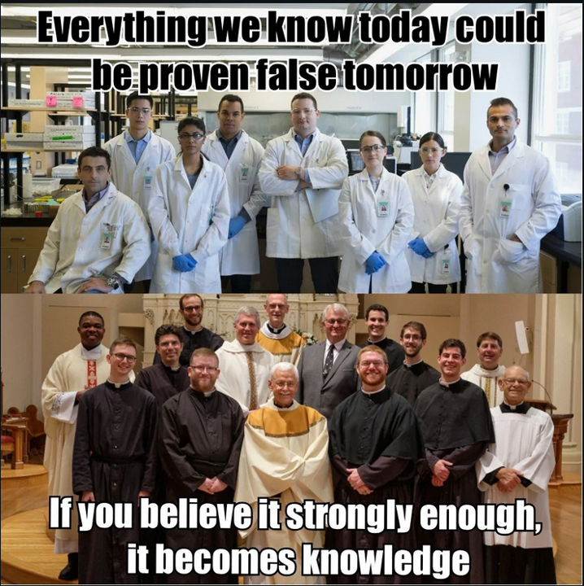
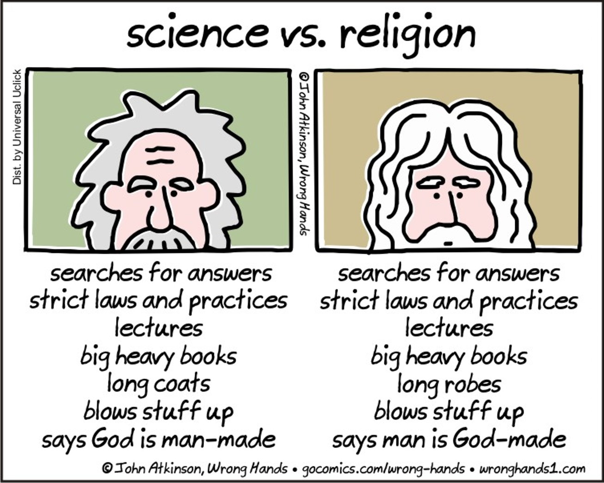
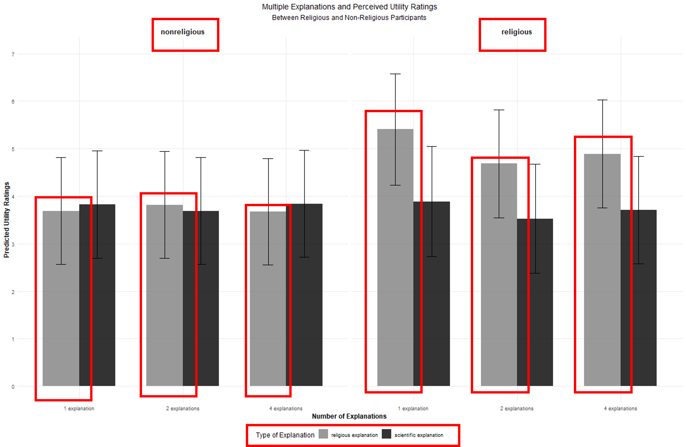
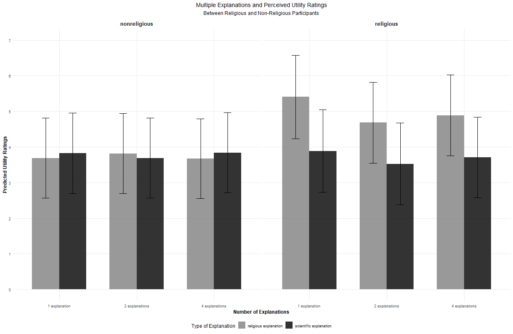

Can scientific and religious explanations coexist?
From Conceptual Change to Explanatory Coexistence
![]()
Department of Psychology, Universitas Airlangga || Chair of Social Psychology, LMU Munich
June 23, 2025
Let us consider two explanations
Let us consider two explanations
Mental illness happen as results from the dynamic interplay of biological (genetics, neurobiology), psychological (personality, coping styles), and social risks (relationships, trauma, socioeconomic status). Medication and psychotherapy can help restore this balance.
Mental illness are tests from God that can make us stronger spiritually. One can find the peace through prayer, remembering God, and trusting that difficulties have purpose.
Which one do you personally think more convincing or most useful?
Some people may be convinced that it’s one explanation against another, but for others, the answer can be less straightforward.
Desiderata
Warning
This presentation, however, won’t dig deeper into whether or not these two types of explanations logically or illogically compatible, its truthfulness quality, or accuracy of scientific and religious beliefs.
Rather, and more interestingly, what does it mean to believe in science and religion, psychologically?
How do people acquire scientific and religious explanations?
Do you still remember how do you first learn that God and oxygen, while both are invisible, exist?

How do people acquire scientific and religious explanations?
Plenty of evidence demonstrates that we naive theories about unobservable entities (e.g., God, bacteria, Angels, mental processes, etc.) primarily through testimony (Ma et al. 2024).
This means we learn these explanations by combining direct experience (McLoughlin et al. 2023) and cultural input (Davoodi and Clegg 2022).
- Direct experience: first-hand, observational experience that is independent of others’ testimony.
- Cultural input: information we obtain from other individuals of our group and community, both verbally or symbolically.
Testimony rings hollow if we don’t trust the sources, so trust here is essential for belief acquisition (Hendriks, Kienhues, and Bromme 2016).
How do people acquire scientific and religious explanations?
When acquiring scientific explanations, cultural input is much less central, rendering individuals more confident with their scientific than religious beliefs (Harris and Corriveau 2021).
Shared Psychological Functions
Not only people develop their scientific and religious understanding in the same manner, science and religion also satisfy similar psychological needs (Rutjens and Preston 2020). Specifically, they fulfill:
- Need for explanation: to understand why events occur and how things work, seeking causal accounts that make sense of experiences and observations
- Need for control: to influence outcomes and have agency over one’s environment
- Need for existential meaning: to find purpose, significance, and coherence in existence

If scientific and religious belief are acquired similarly and fulfill the exact same needs, does it mean they are psychologically competing for our mental resource?
Secularization and Conceptual Change
It’s, of course, natural to assume that religious and scientific explanations are competing for our mental resource.
Literature proposes that the competition occurs not only at individual, but also at institutional level.
- Secularization hypothesis: scholars (e.g., Freud, Durkheim) have long predicted that religion would lose its relevance with the rapid emergence of industrialization (Inglehart and Norris 2007).
- Conceptual change hypothesis: as children start to learn science, their naive theories, including religious beliefs, are accommodated (in Piagetian term), or completely replaced by scientific beliefs (Posner et al. 1982).
Secularization and Conceptual Change
Warning
If these two hypotheses are correct, then we should observe that religious institutions cease to exist in the face of scientific progress and individuals completely abandon their religious beliefs when they receive scientific training.
We do observe these patterns, at least partially.
- There is a declining trend of engagement in religious activities - more strongly in industrialized secular countries (Inglehart and Norris 2007).
- Evidence shows that people tend to ascribe incompatibility between science and religion when they are entering higher education (Scheitle and Corcoran 2021; Shipman et al. 2002).
- Plenty large-scale research demonstrates that reflective and critical thinking, cognitive process fundamental in fostering scientific beliefs, are correlated with God disbelief (Ghasemi et al. 2025).
Secularization and Conceptual Change
BUT…
Religion remains a powerful social force that guides individuals’ decision. Many people deem believe in God is essentially needed for one to be moral (Tamir, Connaughton, and Salazar 2020).
While scientists are less likely to be religious than the general population (Ecklund 2010), many distinguished scientists are also faithful believers.
People at different ages and different cultures are found to engage in both scientific and religious explanations to explain various phenomena, even with or without scientific understanding. In psychology, we called this phenomenon explanatory coexistence.
Explanatory Coexistence
Adults and children in many different cultures are found to be more likely to engage in both scientific and religious explanation rather than with only scientific or religious explanations alone…
…most prominently to explain death, illness, and origins[^1] (Legare et al. 2012; Legare and Gelman 2008).
This coexistence is observed even when scientific literacy is present and salient (Haimila, Metsähinen, and Sevalnev 2024).
According to explanatory coexistence hypothesis, individuals combine scientific and religious explanations by applying different ‘frameworks’ with varying levels of integration.
[^1] e.g., Why do people die? Why do people get sick? Where do we come from (and are heading to)?
Explanatory Coexistence
These frameworks are:
- Target-dependent thinking: using sci and rel for addressing different aspects of a phenomenon
- Synthetic thinking: partially integrate sci and rel by loosely combining them
- Integrative thinking: fully integrate sci and rel into a unified, coherent explanation
Deficient or adaptive?
Warning
If scientific and religious beliefs are competing for our mental resources, why do they coexist as observed by explanatory coexistence literature?
Some people argue that the pervasiveness of religious beliefs in the face of scientific evidence is indicative of deficient reasoning due to incomplete learning, but more and more evidence shows that this is due to science and religion having differential utility.
Functional Differentiation
The pervasiveness of religious beliefs indicate that they serve different roles, thus people apply different rules when processing scientific and religious explanations.
Lombrozo and Davoodi: Science for epistemic purposes (‘to know’), religion for non-epistemic purposes (e.g., moral, social, power, status) (Davoodi and Lombrozo 2022).
Van Leeuwen: factual (scientific) beliefs are involuntarily formed in response to evidence and evaluated based on truth-bearing quality, while religious credence is voluntarily chosen, context-dependent, and evaluated based on identity and normative values rather than evidence.
Religious explanations have a lower evidentiary standard (Lobato et al. 2020).
Some Empirical Evidence
I did an experiment involving 719 German participants, where participants were presented with scientific and religious explanations of three incidents: flood, climate crisis, and war.
Participants then indicated to what extent they felt that each of these explanations useful.
I was testing a motivated reasoning hypothesis: religious participants would rated religious (vs. scientific) explanations as having higher utility, while non-religious people would indicate that scientific (vs. religious) explanation as being more useful.
Some Empirical Evidence
Instead, this what I found
Some Empirical Evidence
Instead, this what I found
What does this implicate?
- The motivated reasoning effect is asymmetry - only religious explanations are affected by religiosity.
- Scientific explanations are virtually intact - religiosity didn’t matter when participants were asked to rate their perceived utility.
- Scientific explanations enjoy a kind of universal acceptance, while religious explanations don’t.
- This explains why scientific and religious explanations coexist.
Summary
- People can engage meaningfully in both scientific and religious explanations, because..
- They are useful for different purposes.
- People apply different rules to scientific and religious beliefs when processing these two types of explanations.
- Religious/supernatural beliefs, therefore, cannot be completely replaced by and don’t hinder scientific understanding.
- People may be able to maximize the benefit of upholding both belief system, especially to their well-being, only with a condition that they construe that science and religion are not in conflict (Price and Johnson 2024).
Summary
- Testimony is central to both scientific and religious belief acquisition, and testimony doesn’t work without trust (Hendriks, Kienhues, and Bromme 2016).
- How can we then foster trust in the experts for providing the public with scientific information useful for making decisions in many aspects of our life? (altenmullerWhenResearchMesearch2021?)
Don’t miss out the next session!